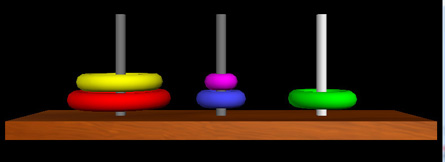

| |
|
Home
Documentation
Download:
Windows
Macintosh
Linux
New in VPython 6
Change log
User forum
Contributed programs
For developers
Python web site |
|
Macintosh Downloads
Downloads provided by sourceforge.net |
 |
This page explains how to install Classic VPython 6, which as of January 2016 is no longer supported; information provided here is of historical interest only.
See the first page of this site for information on using GlowScript VPython or VPython 7.
This Macintosh downloads page deals with Classic VPython, based on the standard version of Python available at python.org. Aaron Titus has posted a useful summary of the various ways to install and use VPython including the GlowScript and ivisual varieties.
Mac downloads for VPython 6 (see below if you are using Anaconda or Canopy)
If you already have a version of VPython 6, it's a good idea to uninstall it before installing the new VPython 6.11. (If you have VPython 5 installed, you need to delete the old folders visual, vis, and vidle from /Library/Frameworks/Python.framework/Versions/2.7/lib/python2.7/site-packages.)
First, download and install Python-2.7.9 from python.org.
Second,
install VPython-Mac-Py2.7-6.11
This version of VPython requires Python 2.7.x from python.org. VPython will not work with the version of Python 2.7 that is part of the standard OSX, nor will it work with versions of Python other than the one from python.org.
Open the VPython installer.
If you have an old VPython 6.x installed, uninstall it:
Doubleclick vpy_uninstall. (Alternatively, you can run "sudo vpy_uninstall.sh" in a Terminal.)
You may get the message "can't be opened because it is from an unidentified developer; your security preferences allow installation of only apps from the Mac App Store and identified developers". In this case, go to System Preferences on the Apple menu and choose Security & Privacy. Click the button "Open Anyway" for the VPython uninstaller. This will start the uninstaller.
Now install the new VPython 6.11:
You may need to reopen the VPython installer.
Doubleclick VPython-Mac-Py2.7-6.11.pkg.
You may get the message "can't be opened because it is from an unidentified developer; your security preferences allow installation of only apps from the Mac App Store and identified developers". In this case, go to System Preferences on the Apple menu and choose Security & Privacy. Click the button "Open Anyway" for the VPython installer. This will start the installer.
Third, if you have not previously installed VPython 6.x,
install Active Tcl.
Ctrl-click the ActiveTcl-8.6.pkg icon and choose Open. If asked, then click the Open button. When asked where to install, choose your computer disk. After installation, drag the installer folder from the Desktop to the Trash. This repairs a problem with the Tcl library needed by Python.
These are "universal" installers for 32-bit and 64-bit Macintosh computers, usable with OSX 10.6 or later.
If you are using the Enthought version of Python 2.7 on a Macintosh, you can use VPython-Mac-Enthought7.3-6.04.dmg.
There is an older VPython 5.74 for Python 3.2.
Installing for Anaconda
If you are using the Anaconda Python distribution, you can install VPython by typing the following in a Terminal (but only for Python 2.7):
conda install -c mwcraig vpython
Installing for Canopy
If you're using the Canopy Python distribution, you can install a "binary wheel" version of the visual package along with the support packages: Polygon, FontTools and TTFQuery.
First, use the Canopy Package Manager to install wxPython-2.9 or later.
Next, in the Canopy application, choose the menu item: Tools -> Canopy Terminal
You should see a terminal window with a command line prompt that starts with "(Canopy 64bit)" and ends in "$".
In the terminal, type (or copy/paste) these commands:
pip install https://dl.dropboxusercontent.com/u/20562746/VPythonWheels/canopy/VPython-6.10-cp27-none-macosx_10_6_x86_64.whl
pip install https://dl.dropboxusercontent.com/u/20562746/VPythonWheels/canopy/Polygon2-2.0.6-cp27-none-macosx_10_6_x86_64.whl
pip install https://dl.dropboxusercontent.com/u/20562746/VPythonWheels/canopy/FontTools-2.4-cp27-none-macosx_10_6_x86_64.whl
pip install https://dl.dropboxusercontent.com/u/20562746/VPythonWheels/canopy/TTFQuery-1.0.4-py2-none-any.whl
Finally try typing:
pythonw -c 'import visual; visual.sphere()'
You should see a window with a white sphere.
How to run VPython
-
In /Applications, doubleclick VIDLE-Py2.7. Do not use the Python IDLE editor with VPython 6.
-
On the File menu choose Open and choose an example program -- for example, bounce2.py.
-
Press F5 to run, or use the Run menu. (Depending on preferences, you may need to press fn-F5.)
-
Every time you run, your files are automatically saved (if you have changed them).
-
Choose VPython on the Help menu for documentation.
-
Ctrl button or right button drag to rotate the "camera" to view a 3D scene.
Alt button or middle button to drag up or down to zoom in or out.
On a two-button mouse, middle is left + right.
Compatibility with the future and the past
We encourage you to place the following statement at the start of your programs, in order that your program will run not only on Python 2.7 today, but also will run in the future on the newer Python 3.x series. Note the double underscore before "future" and the double underscore after "future".
from __future__ import print_function, division
For Python 2.7, this statement invokes the new Python 3.x print format, namely "print(x)" instead of the old "print x", and the new division scheme, namely that 3/4 is 0.75, not zero as in the past. This statement is ignored by Python 3.x.
Changes from VPython 5: With VPython 6
you must include a rate statement in animation loops, and you must import visual or vis before importing graph or controls or filedialog.
Conditions of use
The Polygon module distributed with VPython may not be used except with VPython. Here's why:
In support of the text and extrusion objects, the Windows installer
includes some modules that include Polygon, for which the
following conditions apply: "Polygon
is being distributed subject to the following conditions: This
distribution contains code from the GPC Library, and/or code resulting
from the use of the GPC Library. This usage has been authorized by
The University of Manchester, on the understanding that the GPC-related
features are used only in the context of this distribution. It is not
permitted to extract the GPC code from the distribution as the basis
for commercial exploitation, unless a GPC Commercial Use Licence is
obtained from The University of Manchester, contact: http://www.cs.man.ac.uk/~toby/gpc/".
What is installed
The VPython installer installs the vis, visual, and visual_common modules, the numpy, FontTools, Polygon, and ttfquery modules needed by VPython, and VIDLE, an improved version of the IDLE program editor, in
/Library/Frameworks/Python.framework/Versions/2.7/lib/python2.7/site-packages.
A shortcut to VIDLE
is placed in /Applications/VPython-Py2.7.
Materials such as wood
Materials such as wood will work with graphics
cards that support Pixel Shader 3.0 ("PS 3.0"). See
http://en.wikipedia.org/wiki/Pixel_shader#Hardware. Some materials
may work with graphics cards that support PS 2.0, but other materials
may need to be manually disabled: in the Finder, click the icon for your hard drive and follow the path Library/Frameworks/Python.framework/Versions/2.7/lib/python2.7/vis. In that folder, edit the file site-settings.py to disable shaders. If the graphics
hardware does not support pixel shaders, the material property is
ignored. If you think you should be able to use materials but have
trouble with their display or performance, we highly recommend upgrading
your video card drivers to the latest version.
Python 3
It is currently not feasible to run VPython 6 on Python 3, though it is hoped that this will be possible in the future. If you must use Python 3, you can use an older version 5.74 of VPython:
First, download and install the pure 32-bit Python, Python-3.2.3 from python.org
Second, download and install VPython-Mac-Py3.2-5.74
Fink distribution: At http://www.finkproject.org you will find many open source packages for the Mac, including http://pdb.finkproject.org/pdb/package.php/visual-py27 which is a Fink package corresponding to VPython 5.40. Fink packages use the X11 window manager and are Unix-oriented, so the look and feel is different from native Mac applications.
VPython for the older PowerPC Macs
Steve Spicklemire has built VPython
5.32 for PPC Macs.
|